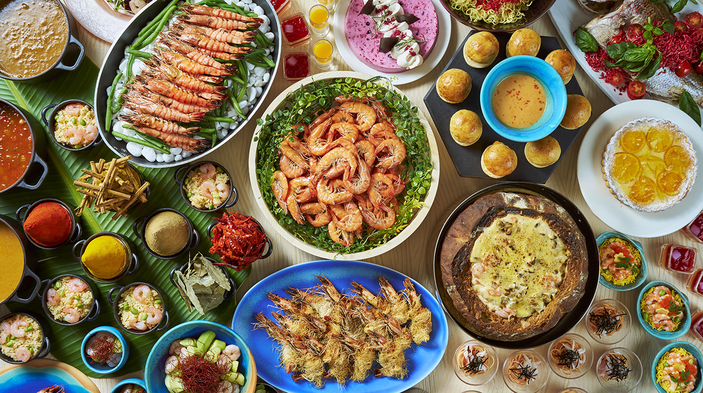
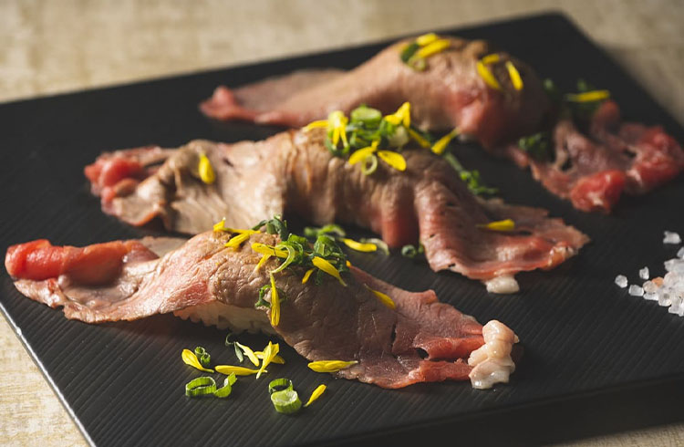
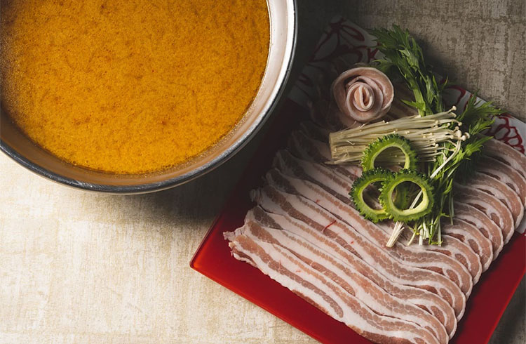
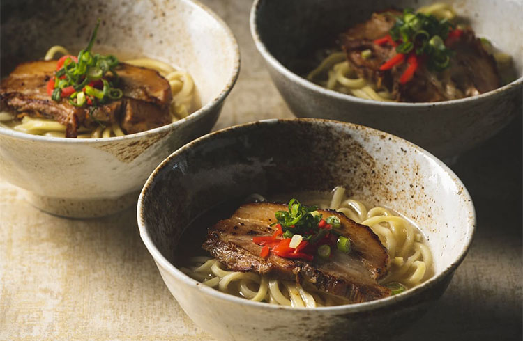
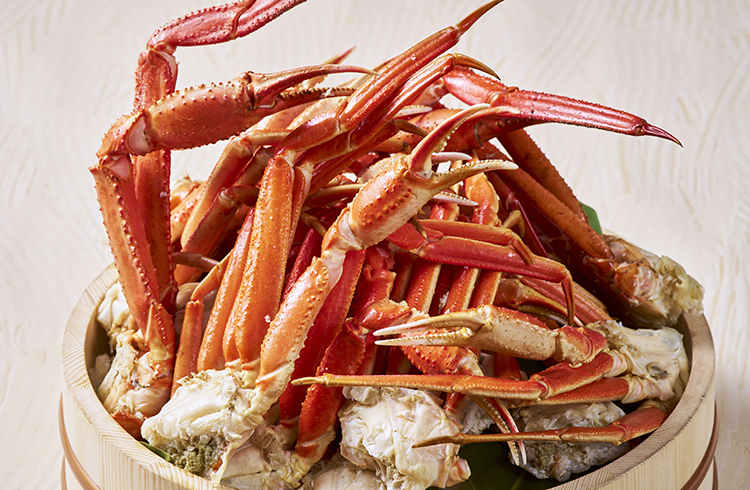
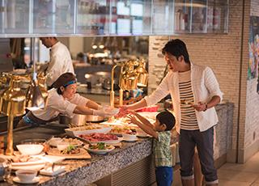
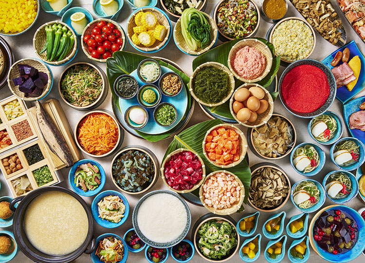
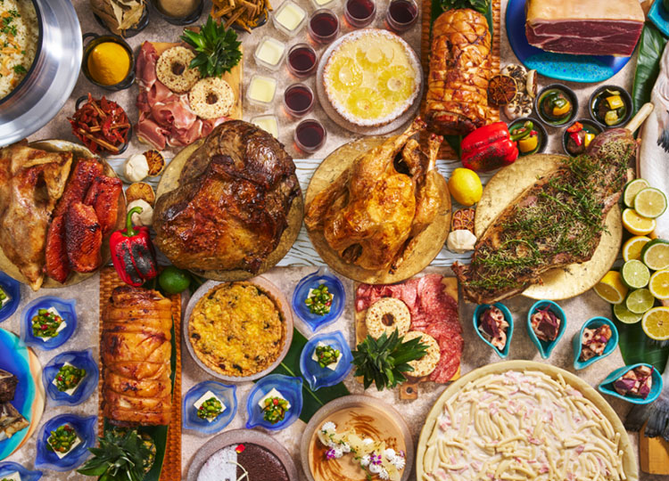
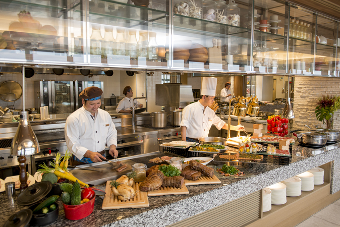
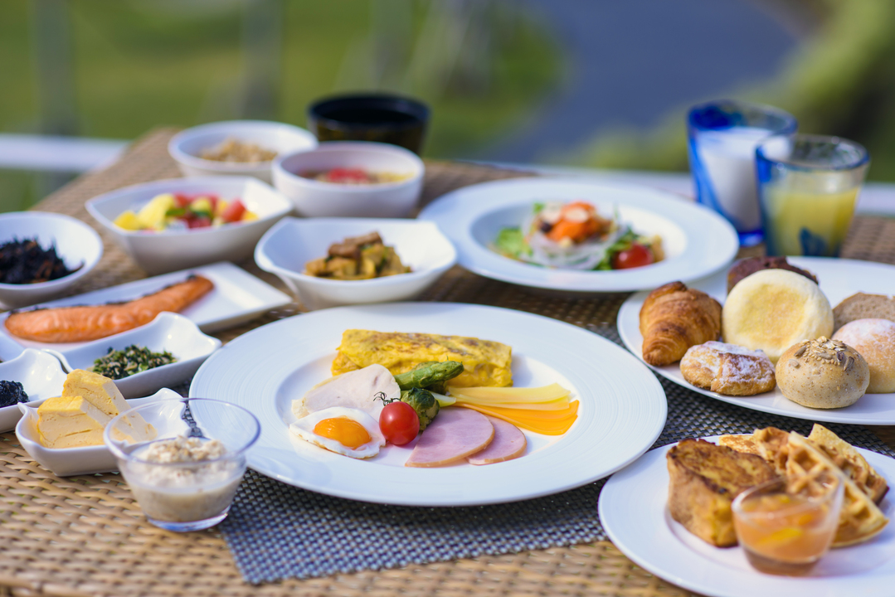

Galerie photos










Kevin, Loïc, May Nhia, Stéphanie, Estelle
Du 5 Avril au 27 Avril 2026
Buffet all-day dining à Chatan (Okinawa), pratique pour un groupe de 5 avec réservation en ligne, horaires clairs et grande capacité d'accueil.










Suriyun est un buffet d'hôtel très pratique pour un groupe de 5 : petit-déjeuner, lunch et dinner dans un seul lieu, avec réservation web TableCheck et un accès simple depuis Naha en voiture.
Conversion indicative sur base 1 EUR = 183.02 JPY (BCE du 04/03/2026). Taux variable. Les tarifs indiqués sont des tarifs de référence publiés sur la page officielle consultée le 05/03/2026.